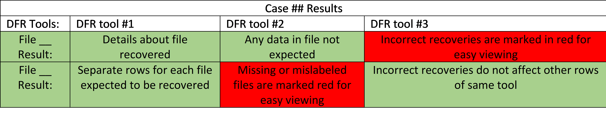

Deleted File Recovery
An evaluation of different deleted file recovery tools that includes the methods used for testing and the research findings.
Background
Digital forensic tools are used for post-mortem investigation of cyber-crimes and cyber-attacks both in corporate and government organizations. National Institute of Standards and Technology (NIST)’s Computer Forensics Tool Testing Program (CFTT) established standards for digital forensic tools to help determine the quality and integrity of such tools. The quality and integrity of these tools are especially important in judicial proceedings. Using a forensic tool that does not follow the standards may cause evidence to be thrown out in court cases (which are increasingly reliant on digital data). Consequently, incorrect results from a forensic tool can also lead improper prosecution of an innocent defendant. The focus of our proposed research is about standardization of one class of forensic tools that are for Deleted File Recovery (DFR). The CFTT standard for DFR tools consists of four core features and a set of optional features.
Process
We used the following process to create the cases into images that can be used against the DFR Tools to get results and compare them.
Generating Test Cases:
1. Zero out partition (make sure drive is entirely empty).
2. Use standard files (size and contents) to fill up flash drive with scenario.
a. Files were created in 1 Megabyte (MB) block sizes unless specified otherwise.
3. Delete appropriate files that we are testing to be found.
4. Create image of drive using dd tool.
Evaluating DFR Tools: For each tool, the following process was followed
1. Mount image for DFR software to recognize and run against OR use the image file directly in the DFR software.
An example image would be:
This example test image can be downloaded here.
{kind=link}
2. Analyze results compared to NIST Standards.
Test Cases
We created the cases with different scenarios in mind and possibilities of users deleting data. All diagrams can be found on Appendix B. Here are a few examples of very common instances that can show the importance of a reliable DFR tool. Case 1 (Data is deleted). This case is the base standard for all tools. The purpose of this case is to test all the tools to see if they identify and recover a single deleted file. Criminals or users can inadvertently delete critical data and believe it is gone forever.
This image can be downloaded here.

Case 4i (Data is deleted and overwritten in hopes of not being found). This test is a bit more complicated, for both the tool and how it happens. It is possible to find methods and tools that promise creating a new file to ensure the deleted file is gone forever. By overwriting the first portion of the deleted file, the goal is to prevent the tool from recognizing A. However, according to NIST standards, the tools should be able to recover as much of file A as possible without recovering file B.
This image can be downloaded here.

Case 5i (Data is deleted and overwritten and deleted again in hopes of only the most recently deleted data is retrieved). Even more complicated than the previous example. By deleting file B that overwrote A, the purpose is to make the tools believe that file B is part of A. However, according to NIST standards, the tools should recover file A and file B separately.
This image can be downloaded here.

Results
The final result of each test case is displayed using color-coded tables that can be viewed and downloaded here.
Conclusion
Based on the data collected, a few conclusions can be made. DFR tools had better results when run on NTFS file systems instead of FAT. This can be because of how the different file systems store the metadata surrounding a file. In NTFS it is easier for DFR tools to determine what is a deleted file, and what should not be recovered. However, even in NTFS a stronger conclusion can be made that none of the DFR tools tested meet the core standards as defined by NIST. Only in the easiest and simplest cases do all tools properly recover the file. For a more meaningful conclusion, there are two possibilities. Either the tools are not good enough, or the standards themselves are insufficient. The majority of failures were on the grounds of the third and fourth core features. DFR-CR-03 states that a tool must recover “all non-allocated data blocks identified in a residual metadata entry.” In other words, all sections of the drive indicated by file system structures as belonging to the deleted file, besides those which have been reassigned to a new file, should be recovered. This is reasonable; however, the meaning varies depending on what is considered “residual metadata,” which differs based on the file system. For example, in the FAT file system, the only information about a deleted file is the file size and starting location on the disk. If the file is fragmented into multiple parts, there is no direct evidence of it. In this situation we determined that only the first fragment must be recovered, because residual metadata gives no information about fragmentation. DFR-CR-04 states that a tool must only recover “data blocks from the Deleted Block Pool.” In other words, all of the data in the recovered file must be from the original deleted file. There are some situations in which this is impossible for the tool to determine with certainty. The test cases 5i-5iv illustrate this. When a deleted file is overwritten by a second file, and then the second file is deleted as well, there is no way to tell which file overwrote which. Both FAT and NTFS store time information about files; however, that information is non-essential metadata, meaning it is not necessary for the operation of the file system and can thus be altered without consequence. With just the essential metadata, in this case simply the locations of each file on the disk, the tool must guess which file came first to avoid violating the fourth core feature. If it makes a conservative estimate and only recovers the parts of each file that don’t overlap the other, it would fail to fulfill the third core feature. File recovery is not an exact science, and there are many cases where metadata is simply not enough to properly recover a file. For the standards to be realistic, they must be more specific about what constitutes “residual metadata” for various types of file systems and resolve situations where the third and fourth core features will be in conflict.